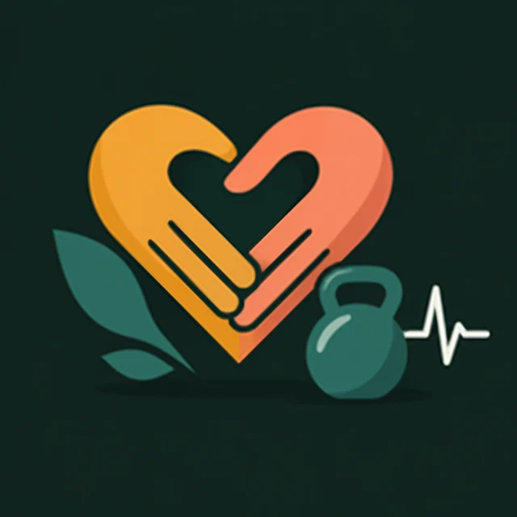

01 · короткий ответ
Секс — это тренировка?
Это физическая активность умеренной интенсивности. Но не замена тренировкам.
≈ 69 ккалтратили женщины за раз
5,6 METинтенсивность — как быстрая ходьба
≈ ⅓от 30 минут на беговой дорожке
Канадские исследователи надели на 21 пару датчики расхода энергии. В среднем близость длилась около 25 минут, женщины тратили около 3 ккал в минуту. Для сравнения: те же женщины за 30 минут на дорожке тратили около 213 ккал1.
Чего в нём нет: постепенного увеличения нагрузки, работы на силу и кости, контроля техники. Поэтому для здоровья и формы — отдельные тренировки, а близость — приятный бонус к активности.